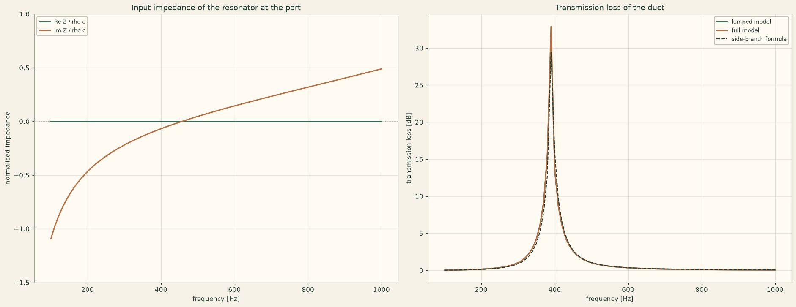
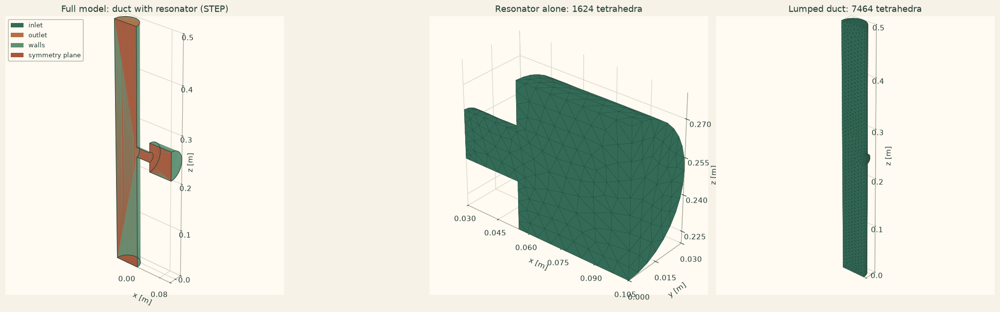

Docs › Examples › Lumping a side-branch resonator into an impedance
Pressure acoustics, frequency domain · 3D
Lumping a side-branch resonator into an impedance
A Helmholtz resonator on the side of a duct is computed once, condensed into its input impedance and replaced by that impedance on the duct.
Run locally with OneSimulation. The example downloads are free. Running them requires an activated runtime. Runtime Alpha 0.2.1a8 · CPython 3.13 on macOS (Apple Silicon), Ubuntu 22.04 (x86-64), and Windows x64. Installation and activation · View pilot plans. Scope of the reference checks.


What it computes
OneSimulation reads three half models from STEP files - the resonator alone, the duct with a short neck stub and the complete system - and solves each with curved quadratic tetrahedra. The resonator alone, driven by a uniform velocity, gives its frequency-dependent impedance; that impedance becomes an admittance boundary on the stub of the duct model, and the transmission loss of lumped and full model is compared. The script that builds the STEP file comes with the notebook.
What it checks
Lumped and full model agree to 0.19 dB wherever the transmission loss is below 20 dB and peak at the same 390 Hz (31.6 dB and 32.9 dB in a 10 Hz sweep); the side-branch formula with Ingard's end corrections predicts the resonance at 391.7 Hz and stays within 2.7 dB of the full model.
Geometry
Save the STEP files resonator_impedance_lumping.step, resonator_impedance_lumping_duct.step, resonator_impedance_lumping_resonator.step next to the notebook before running it.


The geometry script
The script resonator_impedance_lumping_geometry.py builds the geometry with the CAD objects of OneSimulation and writes the files. Change a dimension there, run it, and run the notebook again.
"""Geometry of the OneSimulation example "Lumping a side-branch resonator into an impedance".
Builds, with the CAD objects of OneSimulation, half of the air (cut in the symmetry plane y = 0) of
three models: a duct of radius 25 mm and length 500 mm with a Helmholtz resonator on its side - a
neck of radius 10 mm and length 30 mm and a cavity of radius 30 mm and length 50 mm -
(resonator_impedance_lumping.step); the resonator alone from 5 mm above the duct wall
(resonator_impedance_lumping_resonator.step); and the duct with only a 5 mm stub of the neck
(resonator_impedance_lumping_duct.step). The faces are named inlet, outlet, port (the neck section
5 mm above the duct wall), symmetry and walls where they exist.
"""
from onesim.cad.d3 import Box, Cylinder
duct_radius, duct_length, neck_radius, neck_length, cavity_radius, cavity_length = (
0.025,
0.5,
0.010,
0.030,
0.030,
0.050,
)
middle, stub = duct_length / 2, 0.005
across = dict(axis=(1.0, 0.0, 0.0))
duct = Cylinder(radius=duct_radius, length=duct_length)
neck = Cylinder(
radius=neck_radius,
length=neck_length + 0.01,
origin=(duct_radius - 0.01, 0.0, middle),
**across,
)
cavity = Cylinder(
radius=cavity_radius,
length=cavity_length,
origin=(duct_radius + neck_length, 0.0, middle),
**across,
)
lower_half = Box(length=0.4, width=0.2, height=0.8, origin=(-0.2, -0.2, -0.2))
plane = lambda normal, coordinate, value: (
lambda face: face.kind == "plane"
and abs(abs(face.normal[normal]) - 1) < 1e-9
and abs(face.center[coordinate] - value) < 1e-9
)
models = {
"resonator_impedance_lumping": duct | neck | cavity,
"resonator_impedance_lumping_resonator": (
Cylinder(
radius=neck_radius,
length=neck_length - stub,
origin=(duct_radius + stub, 0.0, middle),
**across,
)
| cavity
),
"resonator_impedance_lumping_duct": duct
| Cylinder(
radius=neck_radius,
length=stub + 0.01,
origin=(duct_radius - 0.01, 0.0, middle),
**across,
),
}
for name, solid in models.items():
half = solid - lower_half
groups = dict(
inlet=plane(2, 2, 0.0),
outlet=plane(2, 2, duct_length),
port=plane(0, 0, duct_radius + stub),
symmetry=plane(1, 1, 0.0),
)
found = {}
for group, test in groups.items():
try:
found[group] = half.select(faces=test)
except ValueError:
pass
named = lambda face: any(
test(face) for group, test in groups.items() if group in found
)
found["walls"] = half.select(faces=lambda face: not named(face))
half.grouped(**found).save(f"{name}.step")The notebook
The complete notebook, cell by cell. Run it to produce the figures and the comparison printout.
Detailed sub-components - a resonator, a perforate, a liner - make acoustic models large. If a component touches the rest of the system only through one small opening, it can be computed once and replaced by its impedance \(Z(\omega)=\bar p/U\) on that opening. Here a Helmholtz resonator (neck 10 mm in radius and 30 mm long, cavity 30 mm in radius and 50 mm long) sits on the side of a duct of radius 25 mm.
The workflow has three models, all in half of the air (cut in the plane of symmetry \(y=0\)):
- resonator alone, driven by a uniform velocity \(U\) on the port, a section of the neck 5 mm above the duct wall: gives \(Z(\omega)\);
- lumped model, the duct with a 5 mm stub of the neck whose end carries the admittance \(1/Z(\omega)\);
- full model, duct and resonator together, as the check.
| boundary | condition |
|---|---|
| duct inlet | incoming plane wave \(p_\mathrm{in}\), reflected wave absorbed: \(v_n=(p-2p_\mathrm{in})/(\rho_0c)\) |
| duct outlet | anechoic, \(v_n=p/(\rho_0c)\) |
| port (resonator alone) | uniform normal velocity \(U\) into the resonator |
| port (lumped model) | impedance, \(v_n=p/Z(\omega)\) |
| all walls, symmetry plane | rigid, \(\partial p/\partial n=0\) |
Reference. For plane waves a side branch of acoustic impedance \(Z_b\) on a duct of area \(S\) transmits (L. E. Kinsler et al., Fundamentals of Acoustics, 4th ed., §10.9)
for a lumped resonator with neck area \(S_n\), cavity volume \(V\) and effective neck length \(L'\) (the neck plus end corrections of \(0.48\sqrt{S_n}(1-1.25a/R_\mathrm{cavity})\) inside, after U. Ingard, J. Acoust. Soc. Am. 25, 1953, and about \(0.82a\) towards the duct). The transmission loss peaks at \(f_0=\tfrac c{2\pi}\sqrt{S_n/(L'V)}\); the lumped estimate is good to a few per cent.
import numpy as np
from onesim.cad.exchange import load
from onesim.meshing import TetrahedralMesher
from onesim.numerics.fem import FiniteElement, Lagrange
from onesim.physics.acoustics import (
AcousticHarmonicPressure,
ComplexPressurePencil,
ConstantPressureForms,
PressureAdmittanceBoundary,
PressureTraceSamples,
SampledPressureAdmittanceForms,
SampledPressureVolumeForms,
pressure_space_volume_samples,
)
from onesim.visualization import plots, theme
from scipy.sparse.linalg import spsolve
theme.set()
c0, rho0, incident = 343.0, 1.204, 1.0
impedance = rho0 * c0
duct_radius, neck_radius, neck_length, cavity_radius, cavity_length = (
0.025,
0.010,
0.030,
0.030,
0.050,
)
frequencies = np.arange(100.0, 1001.0, 10.0)
omegas = 2 * np.pi * frequenciesGeometry and mesh
load reads the three half models with their named faces. Curved quadratic tetrahedra of 7 mm (a fiftieth of the shortest wavelength) fill them.
parts = {
name: load(f"resonator_impedance_lumping{suffix}.step")
for name, suffix in (("full", ""), ("resonator", "_resonator"), ("lumped", "_duct"))
}
meshes = {
name: TetrahedralMesher(target_size=0.007, geometry_order=2).generate(part)
for name, part in parts.items()
}
full = parts["full"]
view = plots.Camera(elevation=30, azimuth=-50)
fig = plots.figure(1, 3, size=(21, 6.5))
plots.geometry(
full,
selection={
"inlet": full.boundaries.inlet,
"outlet": full.boundaries.outlet,
"walls": full.boundaries.walls,
"symmetry plane": full.boundaries.symmetry,
},
labels=False,
camera=view,
title="Full model: duct with resonator (STEP)",
ax=fig[0],
)
plots.mesh(
meshes["resonator"],
groups=("all",),
legend=False,
camera=view,
title=f"Resonator alone: {meshes['resonator'].cell_count} tetrahedra",
ax=fig[1],
)
plots.mesh(
meshes["lumped"],
groups=("all",),
legend=False,
camera=view,
title=f"Lumped duct: {meshes['lumped'].cell_count} tetrahedra",
ax=fig[2],
)
plots.show()Model
Quadratic Lagrange elements; SampledPressureVolumeForms integrates the volume forms, and the traces of inlet, outlet and port come from the space's trace_data. AcousticHarmonicPressure sweeps 100 Hz to 1 kHz in each model.
def solve_model(name, admittances, load):
"""Pressure over the sweep; admittances maps face names to Y(omega), load(traces, omega) is the drive."""
mesh, faces = meshes[name], parts[name].boundaries
space = FiniteElement(element=Lagrange(order=2)).bind_space(mesh)
volume = ConstantPressureForms(
*SampledPressureVolumeForms(
size=space.dof_count,
samples=lambda: pressure_space_volume_samples(space),
inverse_density=lambda omega, sample: 1 / rho0,
compressibility=lambda omega, sample: 1 / impedance / c0,
)(0.0)
)
traces = {
face: SampledPressureAdmittanceForms(
size=space.dof_count,
admittance=lambda omega, sample: 1.0,
samples=lambda face=face: iter(
[
PressureTraceSamples(space.cell_dofs[owner], points, weights, basis)
for owner, points, weights, _, basis, _ in map(
space.trace_data, mesh.facets(getattr(faces, face))
)
]
),
)(0.0)
for face in set(admittances) | {"inlet", "port"}
if face in dir(faces)
}
boundary = PressureAdmittanceBoundary(
lambda omega: sum(
admittance(omega) * traces[face] for face, admittance in admittances.items()
)
)
result = AcousticHarmonicPressure(
operator=ComplexPressurePencil(volume, boundary=boundary),
angular_frequencies=omegas,
load=lambda omega: load(traces, omega, space.dof_count),
linear_solver=spsolve,
).run()
return dict(
space=space,
mesh=mesh,
pressure=result.pressure,
traces=traces,
dofs=space.dof_count,
)
transmission_loss = lambda run: 10 * np.log10(
incident**2
* run["traces"]["inlet"].sum()
/ np.real(
np.sum(
run["pressure"].conj() * (run["traces"]["outlet"] @ run["pressure"].T).T,
axis=1,
)
)
)
duct_ports = {
"inlet": lambda omega: 1 / impedance,
"outlet": lambda omega: 1 / impedance,
}
plane_wave = (
lambda traces, omega, size: 2j
* omega
* incident
/ impedance
* (traces["inlet"] @ np.ones(size))
)
velocity = 1e-3
resonator = solve_model(
"resonator",
{"port": lambda omega: 0.0},
lambda traces, omega, size: 1j
* omega
* velocity
* (traces["port"] @ np.ones(size)),
)
port_impedance = (
resonator["pressure"]
@ (resonator["traces"]["port"] @ np.ones(resonator["dofs"]))
/ resonator["traces"]["port"].sum()
/ velocity
)
lumped = solve_model(
"lumped",
{
**duct_ports,
"port": lambda omega: 1 / np.interp(omega.real, omegas, port_impedance),
},
plane_wave,
)
complete = solve_model("full", duct_ports, plane_wave)Results
The resonance of the resonator alone (where its input reactance crosses zero), the transmission loss of the lumped and of the full model, and the side-branch formula.
S, S_n, V = (
np.pi * duct_radius**2,
np.pi * neck_radius**2,
np.pi * cavity_radius**2 * cavity_length,
)
effective = (
neck_length
+ 0.48 * np.sqrt(S_n) * (1 - 1.25 * neck_radius / cavity_radius)
+ 0.82 * neck_radius
)
branch = 1j * omegas * rho0 * effective / S_n + rho0 * c0**2 / (1j * omegas * V)
formula = 20 * np.log10(np.abs(1 + impedance / (2 * S * branch)))
tl = {
"lumped model": transmission_loss(lumped),
"full model": transmission_loss(complete),
}
crossing = np.flatnonzero(np.diff(np.sign(port_impedance.imag)))[0]
f_port = np.interp(
0.0,
port_impedance.imag[crossing : crossing + 2],
frequencies[crossing : crossing + 2],
)
print(
f"unknowns: resonator alone {resonator['dofs']}, lumped duct {lumped['dofs']}, full model {complete['dofs']}"
)
print(
f"resonator alone: input reactance crosses zero at {f_port:.1f} Hz (5 mm of neck are left in the duct model)"
)
print(
f"lumped formula: effective neck length {1e3 * effective:.1f} mm, f0 = {c0 / (2 * np.pi) * np.sqrt(S_n / (effective * V)):.1f} Hz"
)
for name, values in tl.items():
peak = np.argmax(values)
print(
f"{name}: peak transmission loss {values[peak]:.1f} dB at {frequencies[peak]:.0f} Hz (sweep step 10 Hz)"
)
print(
f"formula: peak {formula.max():.1f} dB at {frequencies[np.argmax(formula)]:.0f} Hz"
)
print(
f"lumped against full model: largest TL difference {np.max(np.abs(tl['lumped model'] - tl['full model'])):.3f} dB, "
f"away from the peak (TL < 20 dB) {np.max(np.abs(tl['lumped model'] - tl['full model'])[tl['full model'] < 20]):.3f} dB"
)
print(
f"full model against the formula, TL < 20 dB: largest difference {np.max(np.abs(tl['full model'] - formula)[tl['full model'] < 20]):.2f} dB"
)Figure
Left: the normalised input impedance of the resonator. Right: the transmission loss of the full and the lumped model and the side-branch formula.
fig = plots.figure(1, 2, size=(17, 6.5))
plots.line(
frequencies,
{
"Re Z / rho c": port_impedance.real / impedance,
"Im Z / rho c": port_impedance.imag / impedance,
},
hlines=[0.0],
ylimits=(-1.5, 1.0),
xlabel="frequency [Hz]",
ylabel="normalised impedance",
title="Input impedance of the resonator at the port",
legend="upper left",
ax=fig[0],
)
plots.line(
frequencies,
tl,
reference={"side-branch formula": formula},
xlabel="frequency [Hz]",
ylabel="transmission loss [dB]",
title="Transmission loss of the duct",
legend="upper right",
ax=fig[1],
)
plots.show()Going further
The same route condenses any sub-component that meets the system through one opening: a perforated plate, an absorbing liner, a loudspeaker. Several openings lead to an impedance matrix instead of one number per frequency. Change the resonator in resonator_impedance_lumping_geometry.py and write the STEP files again: only the resonator-alone model has to be solved again.